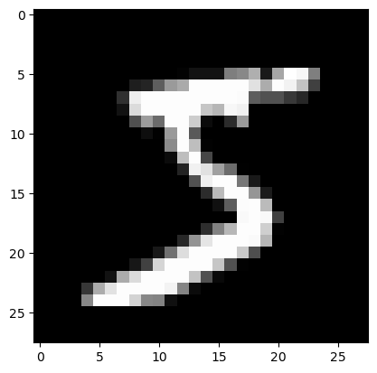

from PythonInterface import Python
let pathlib = Python.import_module("pathlib") # Python standard library
let gzip = Python.import_module("gzip") # Python standard library
let pickle = Python.import_module("pickle") # Python standard library
let np = Python.import_module("numpy")🔥 Dataloader
We will work with the MNIST dataset. The goal ist to read and load the data as a Matrix struct.
Get the data
path_gz = pathlib.Path('./lost+found/data/mnist.pkl.gz')
f = gzip.open(path_gz, 'rb')
u = pickle._Unpickler(f)
u.encoding = 'latin1'
data = u.load()
data_train = data[0]
data_valid = data[1]
x_train = data_train[0]
y_train = data_train[1]
y_train = np.expand_dims(y_train, 1)
x_valid = data_valid[0]
y_valid = data_valid[1]
y_valid = np.expand_dims(y_valid, 1)
f.close()Look at the data
print(x_train[0].shape)(784,)let mpl = Python.import_module("matplotlib")
img = np.reshape(x_train[0], (28,28))
mpl.pyplot.imshow(img, 'gray')
mpl.pyplot.show()
So now we have the data as numpy arrays. The next step is to see how we can get it into a Matrix.
Matrix
The implementation of the Matrix struct below is taken from the Mojo documentation.
from DType import DType
from Memory import memset_zero
from Object import object, Attr
from Pointer import DTypePointer, Pointer
from Random import rand
from Range import range
from TargetInfo import dtype_sizeof
struct Matrix[type: DType]:
var data: DTypePointer[type]
var rows: Int
var cols: Int
fn __init__(inout self, rows: Int, cols: Int):
self.data = DTypePointer[type].alloc(rows * cols)
rand(self.data, rows*cols)
self.rows = rows
self.cols = cols
fn __copyinit__(inout self, other: Self):
self.data = other.data
self.rows = other.rows
self.cols = other.cols
fn __del__(owned self):
self.data.free()
fn zero(inout self):
memset_zero(self.data, self.rows * self.cols)
@always_inline
fn __getitem__(self, y: Int, x: Int) -> SIMD[type, 1]:
return self.load[1](y, x)
@always_inline
fn load[nelts:Int](self, y: Int, x: Int) -> SIMD[type, nelts]:
return self.data.simd_load[nelts](y * self.cols + x)
@always_inline
fn __setitem__(self, y: Int, x: Int, val: SIMD[type, 1]):
return self.store[1](y, x, val)
@always_inline
fn store[nelts:Int](self, y: Int, x: Int, val: SIMD[type, nelts]):
self.data.simd_store[nelts](y * self.cols + x, val)A Mojo dataloader
We need a way of getting a batch of samples. Since Mojo doesnt support yield or anything similar we will resort to a more rustic implementation.
let bs: Int = 8 # batch-size
let ni: Int = x_train.shape[1].__index__() #28*28
let xb: Matrix[DType.float32] = Matrix[DType.float32](bs,ni) # x batch
let yb: Matrix[DType.float32] = Matrix[DType.float32](bs,1) # y batch
xb.zero()
yb.zero()fn matrix_dataloader[type: DType]( a:PythonObject, o: Matrix[type], bs: Int, bindex: Int) raises:
for i in range(bindex*bs, (bindex+1)*bs):
for j in range(o.cols):
o[i-bindex*bs,j] = a[i][j].to_float64().cast[type]()matrix_dataloader(x_train, xb, bs, 0)
matrix_dataloader(y_train, yb, bs, 0)Let’s check a few entries to confirm that worked as expected.
print(yb.load[8](0,0))[5.0, 0.0, 4.0, 1.0, 9.0, 2.0, 1.0, 3.0]for row in range(0,8,1):
print(y_train[row])[5]
[0]
[4]
[1]
[9]
[2]
[1]
[3]Looks good. Now we have a way of getting a batch of data. Next, we’ll build a linear layer based on matmul.